Pleasingpixels: Kabooli, Team Fortress Classic

Gunman Chronicles by Rewolf Software
Pleasingpixels: Kabooli, Team Fortress Classic
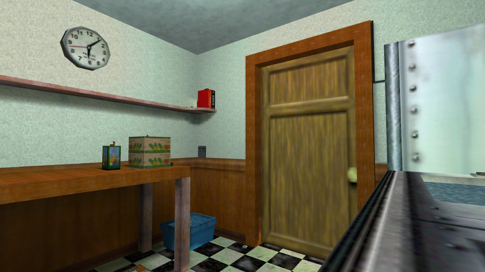
rats for Half-Life deathmatch by Chris Spain
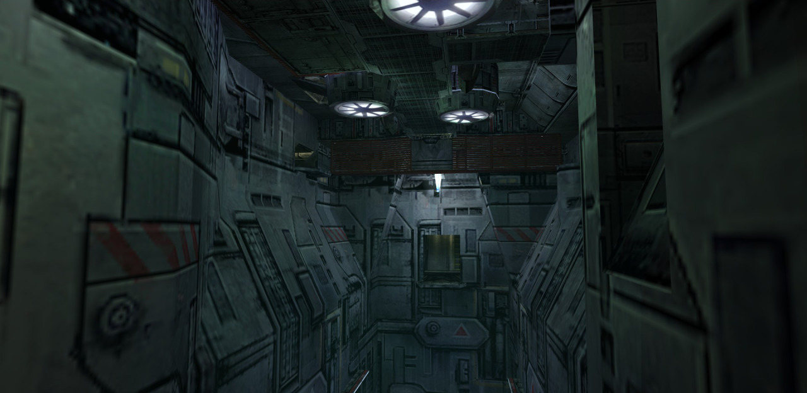
ns_machina for Natural Selection by Jon Chapman
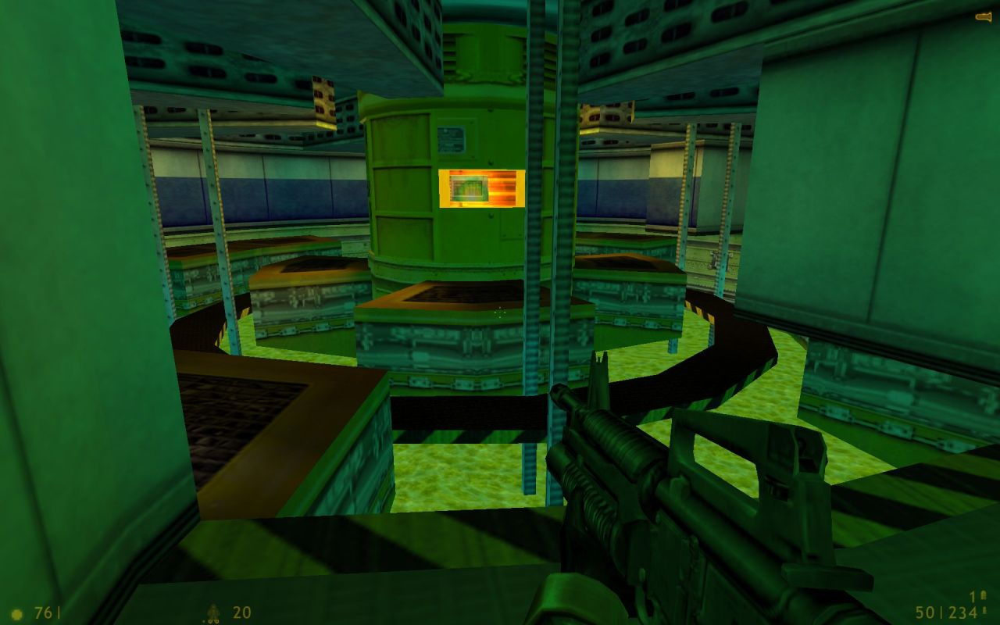
Lambda Core from Half-Life by Valve
Gunman Chronicles by Rewolf Software
The Core (upcoming) by James Archibald and Andy Morris

Pleasingpixels: Tear, Half-Life Deathmatch
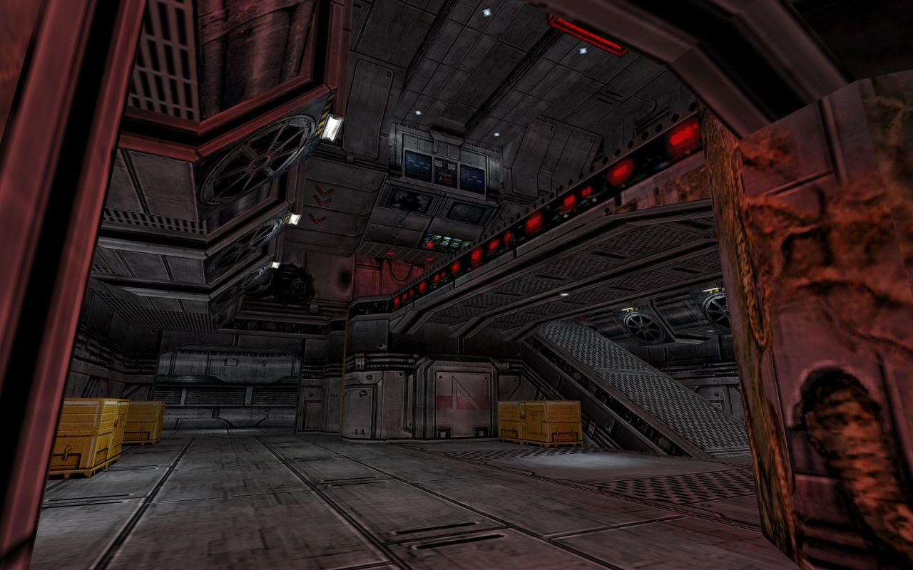
co_pulse for Natural Selection by Tom Dilazaro
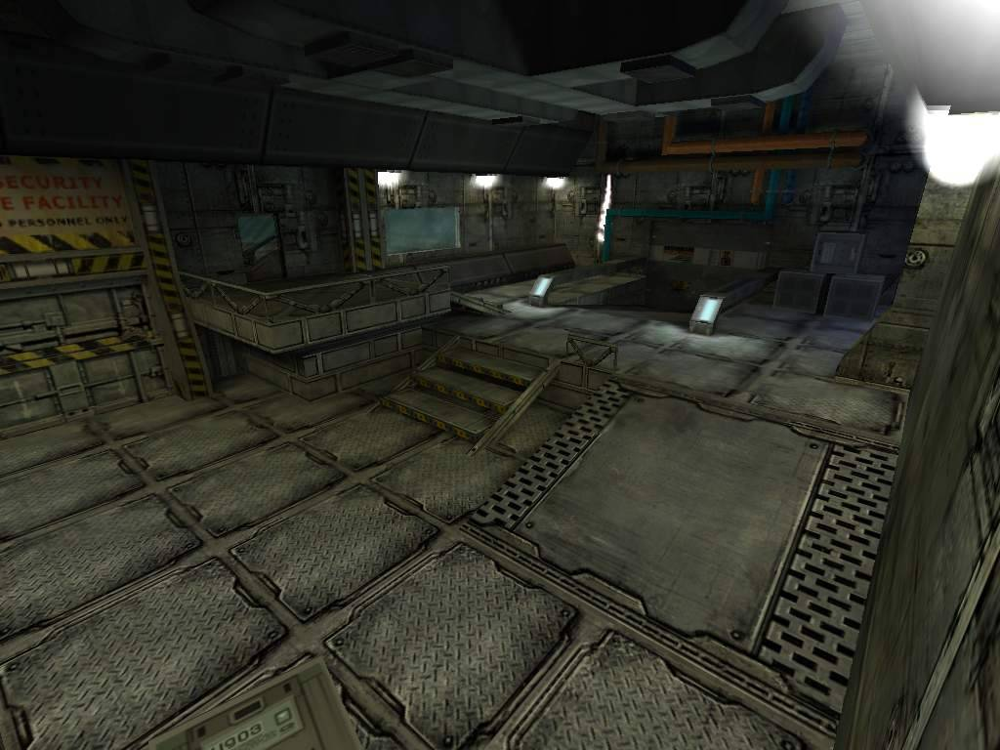
O.U.T.C.A.S.T. (unreleased)
This “reflective” floor from Half-Life: Blue Shift’s intro sequence is a Classic Hack.
It is, of course, actually a glass floor with a copy of the room underneath.
The impressive part is they went all-in and included the NPCs. Not sure if they just flipped the NPCs and scripted sequence upside down (not as simple as it sounds) or made a custom animation. Makes for a good gif though.
de_dust for Counter-Strike by Dave Johnston
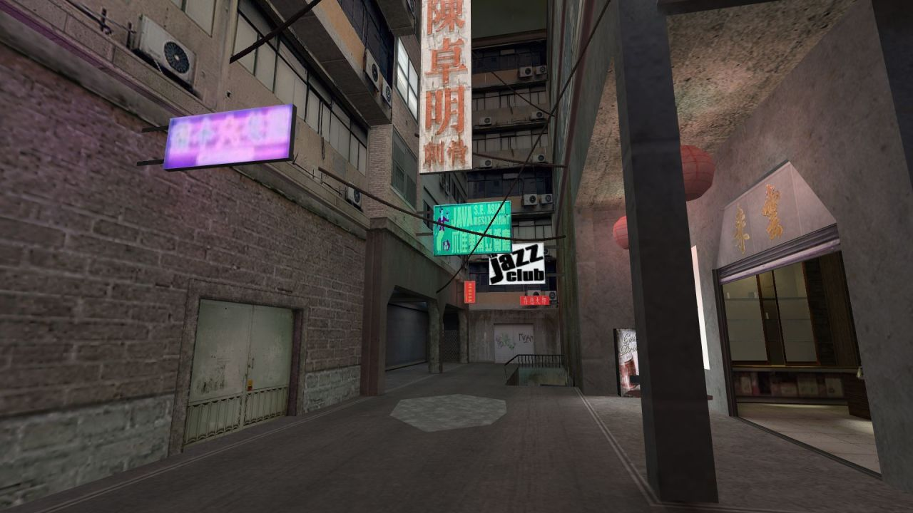
ts_wyndham for The Specialists by Brian Petty

dm_taragon for Half-Life deathmatch by Joe Cassella


a recreation of an area i dreamed about
GoldSource. Maps and experiments (2003-2006)
Description [translated]:
To my nephew Mikhail and my friends.
Special thanks to:
- Liquidator, Patriot, Perplexus and everyone from CAd team for the support and the inspiration back in these years;
- and Valve for the engine (Goldsource) and the game (Half-Life).Music http://marikhov.ru:
1. Ekaterina#2 game over
2. Dancing gun
3. Collision of lifesOn some maps additional textures from the game Medal of Honor were used.
Unfortunately, on the last map (chmtt) several textures are missing. They were lost back in the 2008.
Additional videos on this topic:
https://vk.com/video164967153_163930020 Сad team logo v2
https://vk.com/video164967153_163929963 Virtual CMTT (all textures are in place)
https://vk.com/video164967153_163929947 HL: Core. Intro
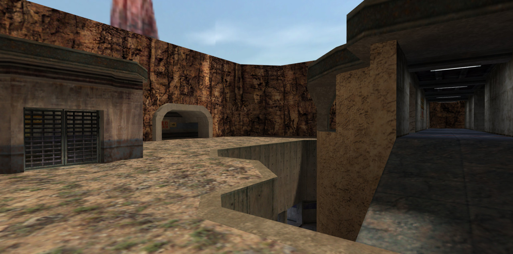
crossover2 for Team Fortress Classic by Valve

Pleasingpixels: De_prodigy, Counter-Strike 1.6

deathrun_pirates for Counter-Strike by Alx`
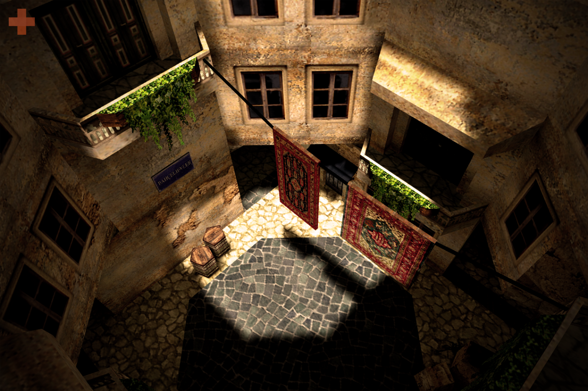
Pleasingpixels: De_torn, Counter-Strike: Condition Zero
dod_merderet for Day of Defeat by Arjan Bak

Pleasingpixels: Dod_anzio, Day of Defeat

Pleasingpixels: Cs_italy_cz, Counter-Strike: Condition Zero
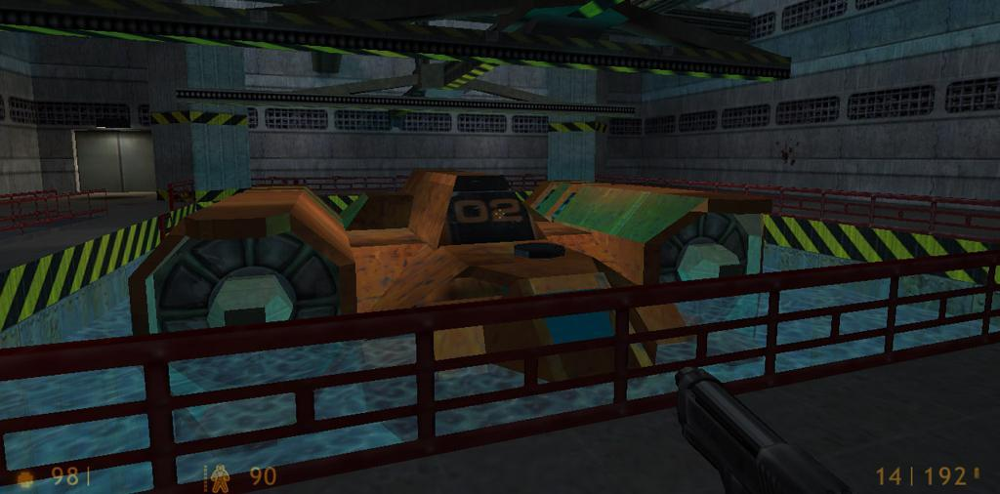
Smart Decoy by Joe Hunter
Smart Decoy is September’s Classic of the Month at RunThinkShootLive
I’m streaming this in an hour at 10am Eastern US time, 3pm UK time at http://twitch.tv/planetphillip

Pleasingpixels: Csde_dust2+1, Counter-Strike 1.6
Zion Warcry (upcoming) by arajigar
Pleasingspixels: TWHL Tower Mod, Half-Life

e1m2 for Deathmatch Classic by Valve
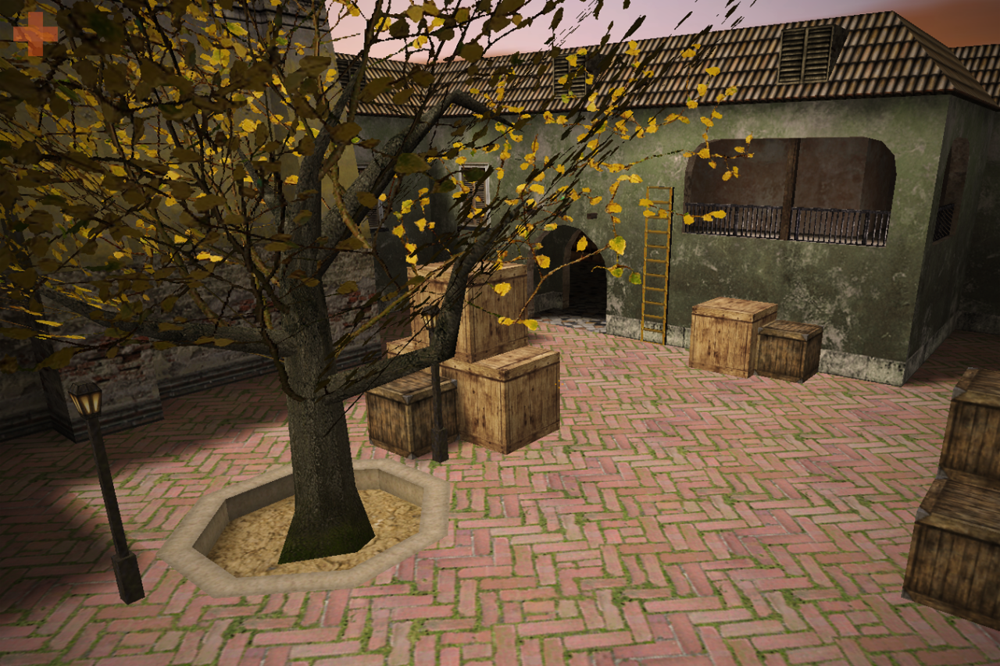
Pleasingpixels: De_esl_autumn, Counter-Strike 1.6.

Half-Rats: Parasomnia (upcoming) by Heath Games
cs_siege for Counter-Strike by Justin DeJong
Counter-Strike Beta 7.1, released 16 years ago - September 13, 2000
The last CS beta version - no new maps, but a func_vehicle APC was added to Siege!
I was going to record my own video but this does the func_vehicle real justice!
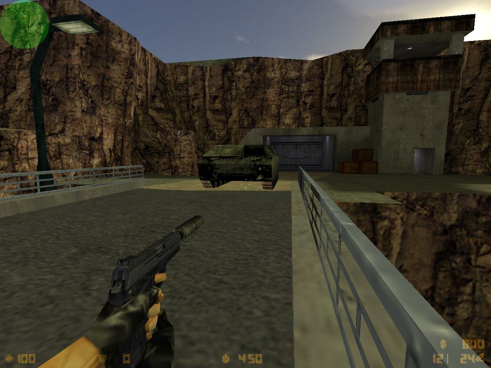
cs_siege for Counter-Strike by Justin DeJong
Counter-Strike Beta 7.1, released 16 years ago - September 13, 2000
The last CS beta version - no new maps, but a func_vehicle APC was added to Siege!
cs_siege for Counter-Strike by Justin DeJong
Counter-Strike Beta 7.1, released 16 years ago - September 13, 2000
The last CS beta version - no new maps, but a func_vehicle APC was added to Siege!

G-ARA for Sven Co-op by Gordon Nguyen

Pleasingpixels: De_desertcomplex, Counter-Strike 1.6

Smart Decoy by Joe Hunter
The end of the hazard course is one of my favourite parts of Half-Life 1: it’s the only time there’s no disaster and nobody’s annoyed at you for running late, so they’ve got unique follow/unfollow dialogue lines and it feels much more like a real place than it usually does. The part with the sunset streaming in is a pretty bit of map, it’s got destructible vending machines, and if you flip out and start attacking people it reacts accordingly (although not so much that you flunk out of the hazard course). It feels like Half-Life: Uplink, which is my other favourite part of Half-Life 1, and I suspect it was built around the same time - the end of development when the main game was pretty much done. Could be wrong.

Intro from Reissues by Sjakal
Tiles for Sven Co-Op by Streamfox & Maiten

dod_northbound for Day of Defeat by Arttu Maki

Toon Run for Sven Co-op by koelzk

Train for Underworld: Bloodline by Black Widow Games
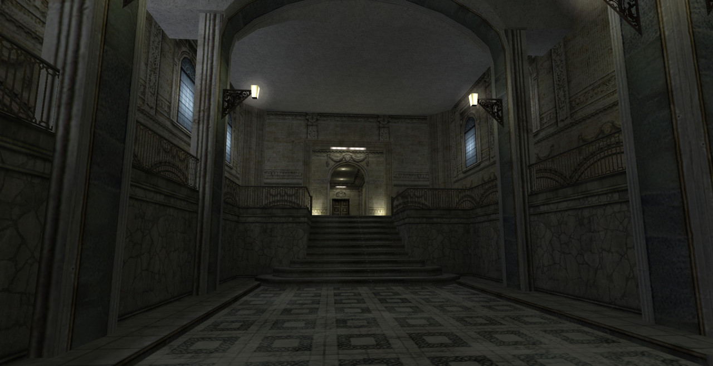
ts_neobaroque for The Specialists by Andreas Braunagel

Metamorphosis (upcoming) by deadcrab

Pleasingpixels: De_atico_rats, Counter-Strike 1.6
si_satur9 for Science & Industry by Brian Grigg

ns_caged for Natural Selection by Nelson Ferryman

2fort for Invasion 1955 (unreleased)